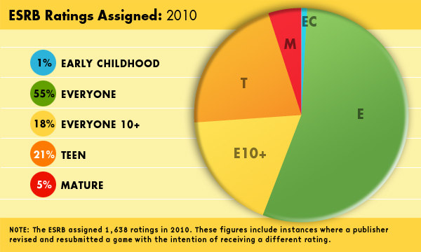
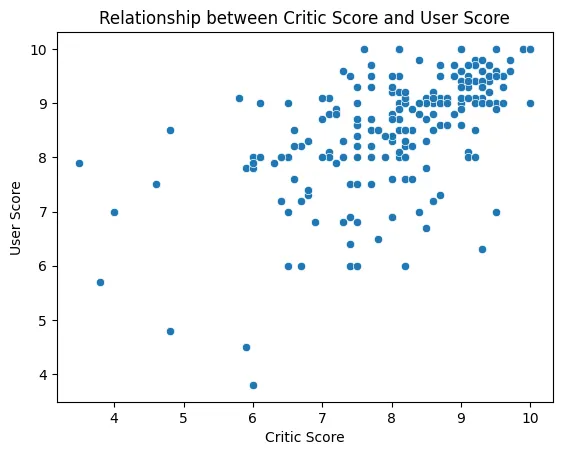
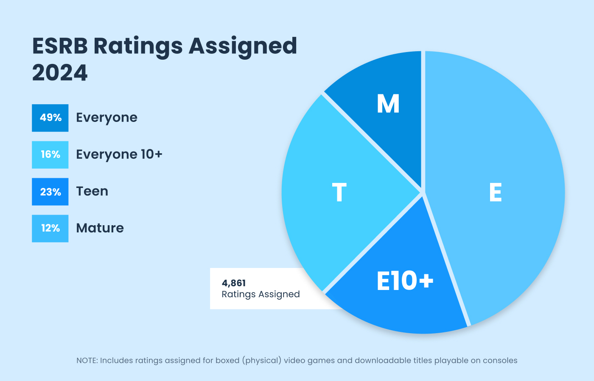

Analyzing Video Game Market Trends
By Caleb, Joshua, and Dimitry
Introduction
The topic that we chose for our project is the analysis of video games sales and ratings over roughly the past two decades. Specifically, we would like to analyze variables such as production year, video game critic score, video game user score, maturity ratings, platform type, and sales across various regions. We find this topic relevant because over the past years, video games have become really popular, and not just amongst teenagers, but also across younger and older age groups. Furthermore, because gaming became popular in the early 2000s, the current data doesn’t only include trends of those who play games currently, but also includes those who played video games back when they were younger, and still play them now, which can be an interesting point of insight to compare current video game consumer culture vs older video game consumer culture. Most importantly, we believe it would be of interest to analyze console usage across the world with video game genre, video game genre with sales, video game genre with maturity rating, sales with critic vs. user score, etc. Many insights and trends can be derived from the comparison of the dataset parameters, and comparing the strength of certain relations over others, for example, whether user rating or critic rating lead to a greater increase in sales, we believe would prove interesting.
The following are two studies related to our topic:
T. Kraemer, W. H. Weiger, and S. Heidenreich, “Do all stars shine the same? Investigating the nonlinear effects of user and critic reviews on video game sales,” Journal of Business Research, vol. 188, p. 115034, Nov. 2024, doi: https://doi.org/10.1016/j.jbusres.2024.115034.
In this Science Direct article, the authors examine how video game sales are influenced by both professional and user reviews. They analyzed the sales and review data of 1,642 video games using models that account for nonlinear effects of review valence on sales. The results show a positive relationship between sales and reviews, but with nonlinear patterns. For user reviews, the positive effect weakens at higher levels, meaning there is little difference in sales impact between good and very good user ratings. In contrast, the positive effect of critic reviews grows stronger at higher levels, highlighting that critic reviews are more influential and continue to play a strong signaling role in this industry. These findings are valuable for video game producers and marketers. For example, boosting critic scores through additional avenues like early access or press previews may yield additional gains for already well-reviewed games. Emphasizing engagement with critics and securing high-profile reviews remains essential, while for lesser-known or mid-tier titles, improving average user reviews can lead to meaningful increases in sales.
H. Cheng, “Video Game Sales Trends and Stats,” BCP Business & Management, vol. 25, pp. 222–225, Aug. 2022, doi: https://doi.org/10.54691/bcpbm.v25i.1760.
In this Boya Century Publishing article, the author provides an overview of the general trends in the gaming industry over the past few years. The provide interesting insights in how conditions in regions can lead to more video game sales, such as in 2007, when Namibia had lower internet access than the rest of the world, which lead to the most video game sales being there during that year; whereas, in other regions, people preferred to use their phones for video games, which led to less sales. Furthermore, the author points out general trends in preferred genres, where action games are the most popular nowadays.
The following are two static images related to our topic:



About Our Dataset
The data which we decided to use for the project is from the following Kaggle dataset: link . The dataset includes roughly 15,000 entries (roughly becomes some games repeat, and some row entries are not full). The data is scraped off of an online game rating, review, and tracker website: VGChartz. The dataset includes 17 columns comprising both categorial variables (such as publisher name, ESRB rating, etc.) and continuous variables (such as sales, critic rating, year of release, etc.). However, the dataset has some flaws as well, mainly that it only goes up until the 2018th year. Therefore, our group may merge similar datasets for more recent years, or scrape VGChartz ourselves; to keep the dataset reasonably sized, we can cut off earlier years before the 21st century. Furthermore, it would also be interesting to analyze video game perception before its release. While it would be hard to analyze marketing strategies, advertisements, conference gatherings, and trailers, it might be possible to gather activity metrics from popular video game blog websites such as Reddit.
In terms of preprocessing, the data already has a really good user rating. All we had to do was just to coerce values to either floats for numerical or strings for categorical data, and mark them as NaN if not possible. Lastly, we removed each row in which there was at least one NaN value.
The table has 6939 rows by 16 columns after processing, and its structure is as follows:
| Name | String | Description |
|---|---|---|
| Name | String | Title of the video game |
| Platform | Categorical | Gaming platform (e.g., Wii, DS, GBA) |
| Year_of_Release | Numeric | Year the game was released |
| Genre | Categorical | Game genre (e.g., Sports, Racing, Action) |
| Publisher | Categorical | Company that published the game |
| NA_Sales | Numeric | Sales in North America (millions) |
| EU_Sales | Numeric | Sales in Europe (millions) |
| JP_Sales | Numeric | Sales in Japan (millions) |
| Other_Sales | Numeric | Sales in other regions (millions) |
| Global_Sales | Numeric | Total worldwide sales (millions) |
| Critic_Score | Numeric | The average score from critics |
| Critic_Count | Numeric | The amount of critics who rated the game |
| User_Score | Numeric | The average score from users |
| User_Count | Numeric | The amount of users who rated the game |
| Developer | Categorical | The developer of the game (includes sub-companies) |
| Rating | Categorical | The maturity rating of the game |